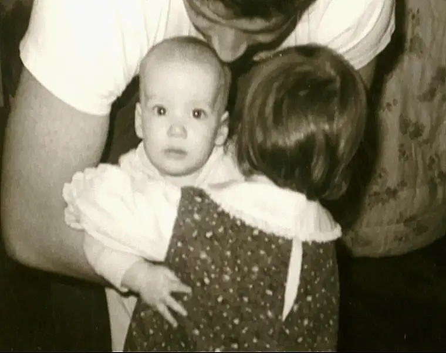
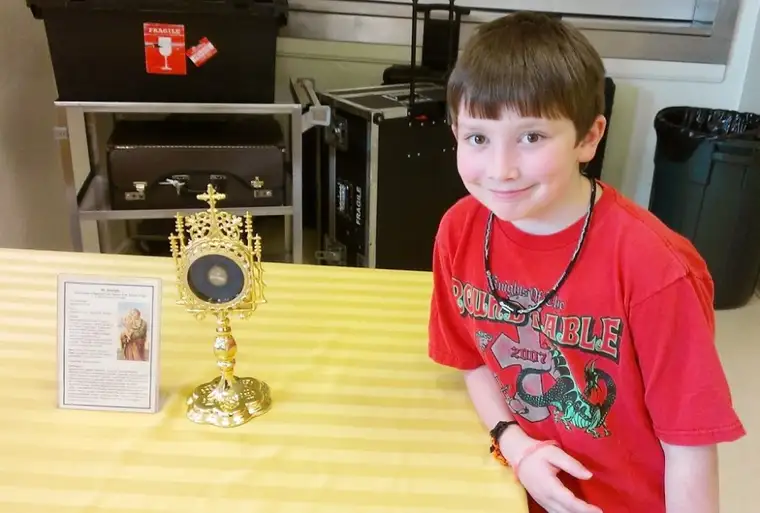

Madeleine L’Engle has been enlivening my heart lately. I could cite any number of paragraphs in her book, “Walking on Water: Reflections on Faith and Art,” but let’s just take this one, from p. 67:
“I am grateful that I started writing at a very early age, before I realized what a daring thing it is to do, to set down words on paper, to attempt to tell a story, create characters. We have to be braver than we think we can be, because God is constantly calling us to be more than we are, to see through plastic sham to living, breathing reality, and to break down our defenses of self-protection in order to be free to receive and give love.”
 |
| Me, receiving and giving love, as a baby |
{kind=link}
There’s so much there. The daring nature of writing. The courage required to just live, not to mention write. And how we cannot fathom all that God has in store for us.
“God is constantly calling us to be more than we are…to break down our defenses of self-protection in order to be free to receive and give love.”
This brings me back to a Mass just after Christmas, when the priest noted how Joseph had been called to be more than he was by being asked to harbor the mother of God, and God himself.
What an immense responsibility, and nothing Joseph could have predicted before this point. Yet he was a good and upright man, well-versed in the ways of faith and the Lord. This helped him be willing to respond affirmatively to God’s call. Just like Mary had, he, too, said, “yes,” and despite any lingering reservations, put one foot in front of the other to do what needed doing.
 |
| My son, Adam, near relics of his patron saint, St. Joseph |
{kind=link}
Each day of our lives, we are being called to be more than we are. That might seem daunting, and yet as children of God, we are capable, through God’s grace. This is how we can accomplish more than who we are, just as Joseph, only by God’s grace, and Mary, only by God’s grace, could say, “Let’s do this thing!” (in so many words…)
“Do not fear.” We’re reminded that we are never alone, and so we need not panic. Each day as we’re moving deeper and deeper toward taking on the “more than we are,” the most important thing to remember is that we’ll be guided, even onto death.
| A winter sunset Christmas 2013 |
{kind=link}
It’s actually quite exciting, don’t you think? Joseph could not have fully comprehended that he’d play a significant role in bringing salvation to the world. Neither can we, and yet it’s happening. And we’re more equipped than we know…to be more than we are.
Q4U: When have you been aware you were being called to more than you thought you were?